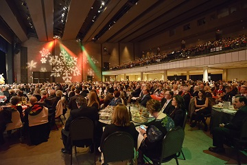

Upcoming Events
Follow upcoming concert and event dates here of The Jackson Symphony and The Jackson Symphony Youth Orchestra.
See more »
Join JSYO
Reach out to our conductors and managers for a chance to join late in the season here. Find audition music and this year's audition dates here.
Read more »
About
The Mission of The Jackson Symphony and youth ensembles is to enrich the quality of life in West Tennessee through performances that incorporate a variety of musical styles in a welcoming atmosphere and a broad spectrum of educational programs for people of all ages.